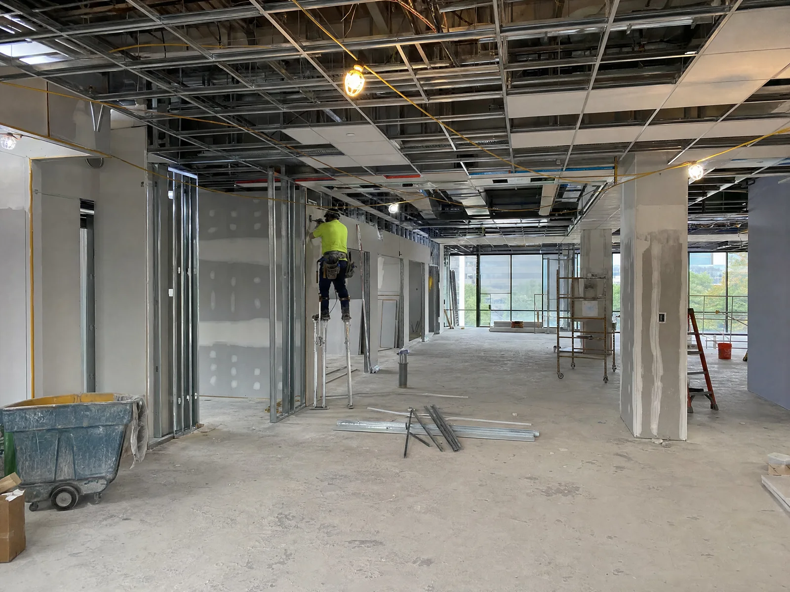
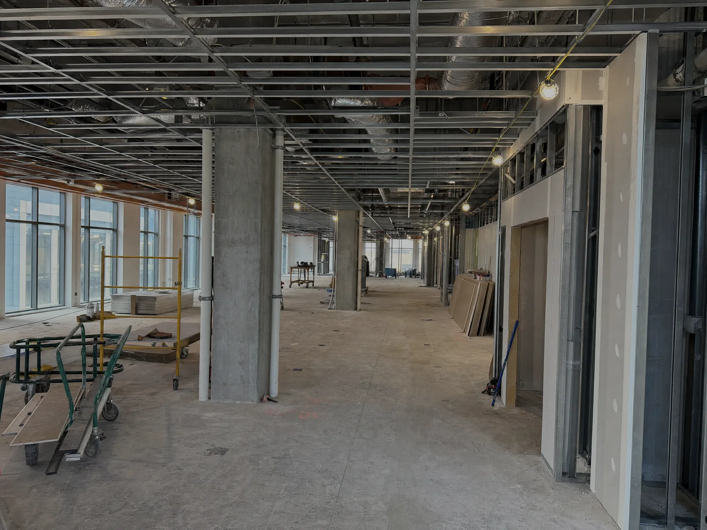

Built for business.Designed to perform.
Tenant improvements, renovations, build-outs and defined trade packages for commercial spaces. Share the location, plans and intended result so the next discussion can focus on what the project actually needs.
You bring the requirement.
We help define the path.
Every request follows the same visible steps, so you always know where the work stands and who has the next action.
Share the need
Tell us the location, condition, objective and timing.
Review & define the scope
Review available information, clarify the work and discuss the appropriate next step.
Coordinate the work
Coordinate resources, the defined scope and project communication.
Document completion
Review applicable closeout items and communicate where the scope stands.
The plan matters as much as the finish.
A commercial construction requirement rarely exists in isolation. The proposed work has to fit the property, the people using it and the decisions that need to be made before a crew arrives. IVO helps organize that information into a scope that customers and participating businesses can understand.
Define the intended use
Describe how the space needs to function when the work is complete. A tenant move, a refreshed customer area and a specific trade package can require different information, materials and sequences, even within the same building. The desired end condition gives the review a clear reference point.
Connect the interfaces
Identify the activities being handled by the owner, designer, landlord or another contractor. Material supply, access, preparation and finish restoration should each have an understood responsibility. Those interfaces are part of the conversation, not details to discover after work is scheduled.
Keep decisions traceable
Drawings, scope questions, proposal assumptions and authorized changes belong with the project. IVO’s workspace gives the relevant participants a way to keep the current information together, with internal team activity separated from shared project communication.
A tenant space needs to be ready for a new use.
An illustrative requirement: a property team has plans for a commercial interior refresh, with partitions, doors and new finishes. The useful first step is to identify the drawing issue, the existing conditions and the areas that must remain operational—not to treat every listed trade as an independent visit.
- Review the issued plans and the intended handover condition.
- Clarify trade interfaces, materials and occupied-space restrictions.
- Track open questions, approved revisions and completion items.
What IVO can
organize for you.

01 / CapabilityTenant improvements & renovations
Support for commercial interior improvements, tenant changes, renovations and build-outs. The defined scope may include preparation, partitions, finishes and related property modifications.
A commercial improvement should be planned around how the space will be used. A new tenant may need a different layout, an existing business may be updating worn finishes, or a property team may be preparing a space for its next use. IVO starts with that objective so the proposed work can be described in practical terms.
The review can address affected rooms and surfaces, existing components to retain, material selections, work sequencing and the information needed from ownership or the tenant. A clear boundary between the requested improvement and unrelated building conditions helps everyone understand what is being priced.
Discuss this requirement →
02 / CapabilityIndividual trades & project support
Submit a single-trade requirement or a connected commercial scope. Drywall, painting, flooring, tile, carpentry and door-related work are reviewed against the actual project conditions.
Some customers already have a general contractor, architect or preferred trade team and need support for a specific package. Others need several related requirements considered together. Identify the portion you want IVO to review, who controls the overall project and which activities will be performed by other parties.
Related trades often depend on one another: preparation comes before finishes, openings must match the specified hardware, and completed areas need to be protected while remaining work continues. Those dependencies should be addressed in the project plan rather than left for the final walkthrough.
Discuss this requirement →Find the details
you need.
Practical notes on what to send, how the work is organized and how decisions are recorded.
Plans & bid documents
Provide the property location, scope, drawings, specifications, photos and bid deadline. Include site-visit requirements and procurement instructions when available.
A useful bid package identifies the drawing revision, the requested scope, quantities where known and any owner standards that apply. Tell us whether the request is an early budget exercise or a defined procurement, and identify who can answer design or specification questions. This helps distinguish a planning assumption from a confirmed requirement.
Occupied properties
Identify operating hours, tenant access, restricted areas and work-window requirements early. Phasing, protection and sequencing should be addressed in the agreed scope.
Work in an operating property may need to be phased by area or scheduled around business activity. Discuss delivery access, staging space, dust and noise concerns, protection of existing finishes and restrictions on interruptions. Any special working conditions should be reflected in the agreed plan before resources are committed.
01Pricing & scope changes
Review the quoted inclusions, exclusions, timing and contracting arrangement. Additional work or changed conditions require documented review and authorization.
A useful proposal explains the basis of the price, material allowances where applicable, exclusions and assumptions about existing conditions. If a field condition or requested revision changes that basis, document the issue and obtain the relevant decision before proceeding with the added scope. A portal entry helps track that decision; it does not approve an extra charge by itself.
02Completion records
Use the project workspace for questions, supporting files, punch-list items and closeout evidence. The customer reviews the completion package before recording acceptance.
Completion includes resolving the agreed punch list and organizing relevant photographs, product information and other closeout documents. Identify who will inspect the result and which outstanding items need follow-up. Keeping those records with the project makes the final review clearer for the customer and the participating businesses.
You’ll know when
we’ll respond.
Response targets are written down by priority, with a separate clock for reply, site visit and next step.
Unsafe or unsecured
- Call answered
- By a person
- Crew on site
- Target within 4 hours in served metros
- Next step
- Temporary securing on the first visit. Written plan within 24 hours
Broken storefront or entry, active leak, impact damage, an opening that can't be locked.
Affecting operations
- Reply
- Within 2 business hours
- On site or assessed
- Within 1 business day
- Next step
- Fix or written plan within 2 business days
A failed door closer, a damaged fixture in a public area, a repair blocking a tenant.
Repairs & turnovers
- Reply
- Same business day
- Site visit or scope call
- Within 2 business days
- Written estimate
- Within 5 business days of a complete scope
Drywall and paint repairs, suite make-ready, hardware, flooring and finish work.
Planned work
- Reply
- Within 1 business day
- Bid / no-bid decision
- Within 2 business days
- Proposal
- By the bid deadline, or a date agreed with you
Tenant improvements, renovations, GC trade packages and multi-trade projects.
Business hours are Monday–Friday. Arrival times depend on location, access and safety conditions, and we always give you a confirmed estimate on the call. A submitted form does not dispatch a crew, so for emergencies always call.
Before the next step.
Still have a question? Call (206) 539-9549 or email office@ivoservgroup.com.
Can we bring IVO into a project that already has a general contractor?
Yes. Identify the specific package or support requirement, who is responsible for overall project delivery and which procurement requirements apply. Any participation is reviewed against the actual scope and the applicable contracting arrangement.
Do we need a complete set of drawings to start?
You can begin with the available information. Explain whether you need an initial discussion, a budget review or a proposal against an issued package. Missing design decisions or measurements may need to be resolved before a defined price or schedule can be confirmed.
How are additional requirements handled?
Keep the changed condition or requested revision identifiable. The appropriate parties must review its effect on scope, cost and timing and document the applicable authorization. Recording a change request in the portal does not itself approve extra work.
Explore other
service paths.
Property Services
Repairs, turnovers and ongoing support that keep properties leasable and running.
Emergency Property Response
Temporary securing and follow-up repair planning after unexpected damage.
Specialty Services
Property modifications, multi-trade work and scopes that don’t fit a standard label.
Start with one project.
Let us earn the next one.
Tell us what the property needs. We’ll help identify the appropriate next step.